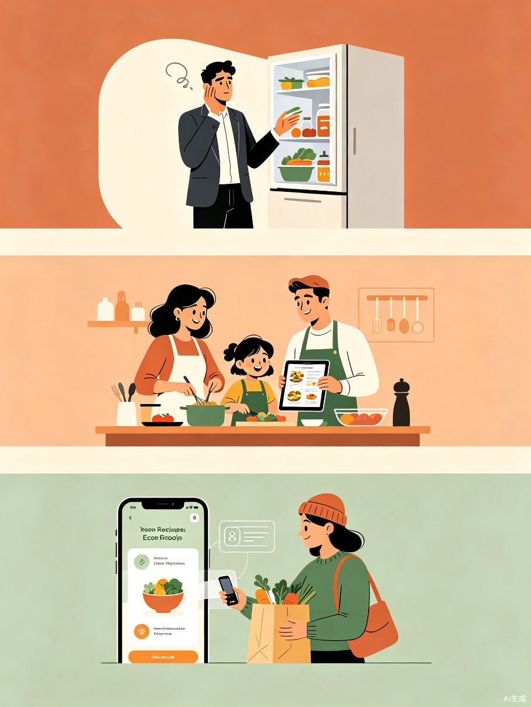
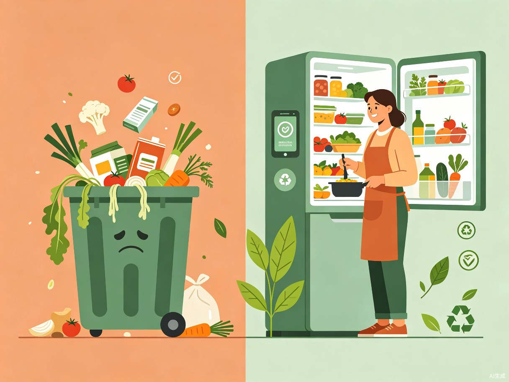

创意介绍
一款基于冰箱库存与用户画像，进行智能化、个性化菜谱推荐及分量换算的微信小程序。它让食材不再被遗忘，让每一次做饭决策都简单愉悦。
想解决什么问题
核心解决两大痛点：一是「冰箱里有什么、能做什么菜」的信息断层，导致食材过期浪费；二是「今天吃什么」的决策疲惫，尤其难以兼顾人数、口味、忌口和时间。
为什么会想到做这个
直接灵感源于日常场景 —— 打开冰箱看到一堆食材，却因想不出怎么搭配而最终点外卖，直到清理时扔掉过期食物，产生强烈的浪费内疚感。我们希望把「减少食物浪费」从一个口号，变成每个人厨房里一个轻松、有成就感的日常习惯。
大概是什么产品
一款基于冰箱库存与用户画像，进行智能化、个性化菜谱推荐及分量换算的微信小程序。核心功能包括：
冰箱库存管理
扫码或语音快速录入食材，自动记录保质期，临期智能提醒。
智能菜谱推荐
基于现有库存主动推荐可制作的菜品，优先消耗临期食材。
分量自动换算
根据用餐人数、口味偏好、忌口自动调整食材用量和烹饪步骤。
目标用户及痛点
面向哪些用户
核心用户：在一二线城市租房或自有住房、自己做饭的年轻人（22-35岁）。他们追求生活品质，关注健康与环保，习惯用数字化工具管理日常生活。
次级用户：负责家庭日常采买和烹饪的家庭成员，或对健康饮食和减少浪费有意识的人群。

在什么场景下使用
做饭前的高频决策
打开冰箱不知做什么，希望快速获得灵感，且菜谱必须能避开家人的忌口、适应当前人数和烹饪时长。
采购后的库存管理
买回菜后，扫码或语音快速录入，替代大脑记忆，建立数字化食材台账。
清理冰箱的补救
发现食材快过期，紧急寻找能优先消耗这些食材的菜谱组合，化「危」为「机」。
当前痛点
- 食材浪费严重且充满内疚：用户只能凭记忆管理库存，常因遗忘导致食材过期，既浪费钱又造成心理负担。
- 食谱搜索与计算极度低效：在通用食谱App里搜「番茄鸡蛋」时，无法一键剔除「辣」的口味、无法把「2人份」自动换算为「1人食量」，更无法优先查看能同时消耗「快过期的豆腐」的菜谱。这些都需要人脑去逐一匹配、换算和决策，过程非常繁琐。

价值与意义
社会价值：减少食物浪费与碳足迹
家庭场景是全球食物浪费的主要源头之一。本产品通过「临期优先推荐」等机制，将「减少浪费」直接融入每一次烹饪决策。每清掉一次冰箱，都是为减少碳排放做出微小而确定的贡献，让环保变得可量化、有成就感。
我们相信，当环保行为被嵌入日常决策的默认路径中，它就不再需要「坚持」，而是成为一种自然的选择。
效率提升：从「人找菜」到「菜找人」的决策变革
它彻底改变了传统的菜谱搜索模式。用户不再需要基于菜名去搜索，而是让系统基于已有库存（能做什么）+ 用户画像（适合做什么）来主动推荐方案，并自动完成分量换算和口味过滤。这直接节省了餐前繁琐的「查菜谱-算分量-想搭配」时间，让做饭这个劳动本身变得更聚焦、更愉悦。
flowchart LR
A[打开冰箱] --> B{有食材?}
B -->|是| C[扫码/查看库存]
B -->|否| D[生成采购清单]
C --> E[选择人数/口味/时间]
E --> F[智能推荐菜谱]
F --> G[分量自动换算]
G --> H[跟着步骤烹饪]
H --> I[美味上桌]
D --> J[一键购买]
J --> C
产品核心差异化
库存驱动推荐
区别于传统「按菜名搜索」，以冰箱现有食材为起点，反向推荐可做菜谱。
临期优先算法
将快过期的食材权重提高，智能组合消耗方案，从源头减少浪费。
全维度个性化
人数、口味、忌口、烹饪时长、营养目标，多维度一键过滤与换算。
环保成就可视
记录每次减少的浪费量，换算为碳减排贡献，让善意被看见。